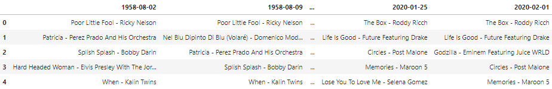
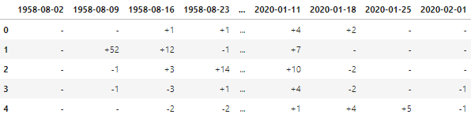
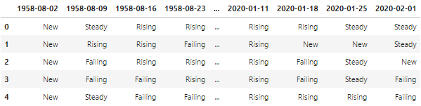

Introduction
If you have not been living under a rock, you would have heard of one of the biggest hits in 2019, Old Town Road, which topped the Billboard Hot 100 for a record-breaking 19 weeks. However, 19 weeks with the same song on # 1 could also cause a headache for Billboard Hot 100: a stagnant chart would wear on audience's interests. So in its 60+ years' history, Billboard Hot 100 has also updated its formula and chart policy a lot to balance its representativeness of music trend and the fluidity of the chart. For example, to relieve the stagnancy caused by the integration of SoundScan and BDS (Broadcast Data System) data in 1990s, Billboard established a new removal policy that a song will be permanently moved to 'recurrent status' if it has spent 20 weeks in the Hot 100 and fallen below position #50. In the last decade, the policy was extended to remove descending songs ranking below #25 after 52 weeks. However, even after these attempts to stimulate and re-activate the chart, there are still some complaints that the chart is becoming stagnant. So I start to wondering whether there is any way to measure the fluidity of the chart? If any, how does the fluidity of Billboard Hot 100 change over time? And why do people feel that the chart is becoming more stale in recent years? With these three questions in my mind, I started this mini project out of curiosity.
This project scraped the Billboard Hot 100 chart from its very first issue dated Aug 2nd, 1958 to the recent release of Feb 1st, 2020, including the title, the artist, the trend (New, Steady, Rising, or Failing), and the specific position change of each song in chart. I first crafted some basic metrics (such as # of New Entrys, # of Steady songs, and average position change) to measure the fluidity of the chart, but found some contradictory evidences. Then I shifted my focus to the top part of the chart (Top10/Top40) as it had more public exposure thus may influence how stagnant people felt the chart was. In this process, several indicators, namely # of songs made it to top 10/top 40 and the distribution of duration in top10/top40, turned out to be helpful in resolving the contradiction and revealing why people found the chart stale in recent years.
Part I: Get the Data
Two Python libs were employed to scraped the Billboard Hot 100 chart history: requests and bs4 (BeautifulSoup). To avoid being blocked by Billboard website, I set up a 5 seconds interval between each visit and let the script run for a whole night. The final data consisted of three datasets: title_df contained the title and artist info, change_df stored the position change info, and trend_df tracked the trend info (New, Steady, Rising, or Failing). Each dataset had 3210 columns and 100 rows (weekly Hot 100 from Aug 2nd, 1958 to Feb 1st, 2020). Below are the screenshots of title_df, change_df, and trend_df, respectively.
  Part II: The 'New's in Hot 100
Regarding measuring the fluidity of the chart, the first thing came to my mind was how many New songs Billboard Hot 100 had each year. Intuitively, the more New songs, the less stagnant the chart is. Below graph presented the final results. There were around 600 to 700 new songs each year at the early stage, but the number gradually declined to around 300 and bottomed out in 2001 with only 288 new entries. Then the recent two decades saw a wavering growth in total New songs and two spikes in 2011 and 2018, the latter of which actually carried the highest amount of New Entry since 1971. This evidence seemed to undermine the Stagnant Chart Hypothesis.
Next, let's take a look at how many songs debuted in the Top 40 and Top 10 over the years. As known, the manipuliation of the policy requiring availability in both retail and radio, the inclusion of digital download, and the inclusion of streaming data resulted in a lot of high-debut songs in Hot 100. Accordingly, we could see three major peaks around 1998, 2010, and 2018 in the graph below. The trend indicated that more and more new songs directly blasted into Top 40 even Top 10, which seemingly would disturb the top part of chart and make it more competitive and unpredictable. This evidence did not necessarily say that the chart was getting more current and lively, but at least it did not speak in favor of the Stagnant Chart Hypothesis.
Conclusion: Hot 100 saw more and more Top 40 even Top 10 debuts since 1990s along with a visible rise in New song in the last 2 decades, which did not stand with the Stagnant Chart Hypothesis.
Part III: The 'Steady's in Hot 100
The opposite of New is Steady: the same old song on the same position for one more week, which is being stagnant in a hardcore way. Let us see how many Steadys Hot 100 had each year. In the graph below, the x axis is year, and the y axis is the weekly average # of Steadys in chart. The three lines all soared in 1990s, when Billboard incorporated more accurate sales and radio data from SoundScan and BDS. After that, the lines all seemed to plateaued out, especially for Top 40 and Top 10.
Additionally, if we also consider songs with no greater than 1 position change (+1, 0, and -1. Excluding debuting New songs) as being Steady and re-plot the graph, we could see a even more plateaued-out trend for all three lines, which implied that Hot 100 saw more Steadys on its top part for the last 3 decades that it did for earlier decades. This could be largely explained by the inclusion of SoundScan and BDS data. But, given the conclusion of Part II, where did the influence of those increased New songs go?
Conclusion: Hot 100 contained a relatively high portion of Steady songs for the last 3 decades and the trend seemed set to continue. Interestingly, the chart was having high volumes of New songs and Steady songs at the same time for recent decades, which seemed contradictory regarding whether the chart was getting more stagnant.
Part IV: The Tenure of Songs
Above analyses focused on two specific statuses of songs in chart: New and Steady, and got conflicting conclusions. What if we take the chart as a whole and see how many songs made it to the chart and how long they spent in chart? Below graph presented how many unique songs appeared in each year's Hot 100 chart (a song could appear in 2 or more years' charts). This chart looked and should look similar to the New songs graph in Part II as every New Entry was also a unique song in chart. Thus the below graph clearly reflected the recent increase in total New songs.
However, if we look at the same graph for Top 40 and Top 10, something interesting emerged. The Top 40 curve seemed to respond to two spikes in high debuts/New entrys in 2000s and 2010s, but averagely there was no clearly upward trend. What's more interesting was the Top 10 curve: the number of songs made it to Top 10 every year actually stayed almost the same since 1990s.
From previous investigation we learnt that more songs entered the Hot 100 and more songs debuted in Top 40 even Top 10, but below graph was telling us that the number of songs made it to Top 10 every year actually stayed almost the same since 1990s, and that there were some spikes in Top 40 entrys but averagely no clearly upward trend yet. This gap explained the concurrence of high volumes in both News and Steadys: if only a relatively fixed number of songs could enter Top 40 and Top 10 regardless of how many New songs there were, then the Top 40 and Top 10 in 2000s and 2010s would just be as Steady as they were in 1990s even with more New songs and high debuts. With that being said, my guess in Part II that more high debuts would make the top part of chart more competitive turned out to be false.
If Hot 100 in 2000s and 2010s had more songs that it did in 1990s, and the Top 40 and Top 10 in 2000s and 2010s were almost as stagnant as they used to be in 1990s, why do people still feel that the chart was getting more stale in recent years? Some clues hit me when I was checking the durarion of songs on Hot 100, Top 40, Top 10, and Top 1.